¡Bienvenido a InsightLab! Te invitamos a realizar un viaje visual por los tesoros naturales de nuestro planeta y explorar la biodiversidad de las regiones más remotas, aquí encontrarás información detallada y útil sobre las mejores aplicaciones, herramientas y recursos para inspirarte y ayudarte a conectar con la naturaleza, ofreciéndote información confiable y recursos útiles para que puedas disfrutar al máximo de tu aventura.
-
Ventusky
Ventusky es una aplicación innovadora que te permite visualizar datos meteorológicos de manera interactiva y en tiempo real. Es fácil de usar y tiene mapas animados que muestran distintos aspectos del clima como la velocidad del viento, temperatura, presión atmosférica y nubosidad. Puedes ajustar la velocidad de la animación y la escala de colores para personalizar tu experiencia. Es útil para planificar actividades que dependen del clima, como navegación, aviación, agricultura y turismo. ¡Con Ventusky estarás siempre un paso adelante del clima!
Visitar Ventusky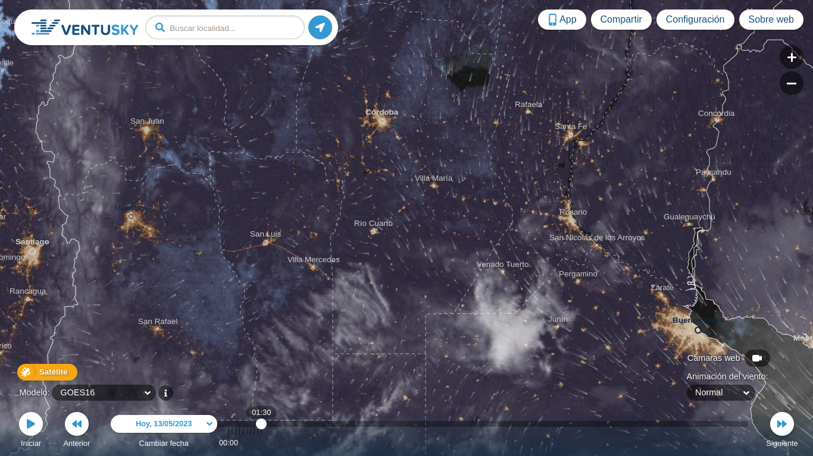 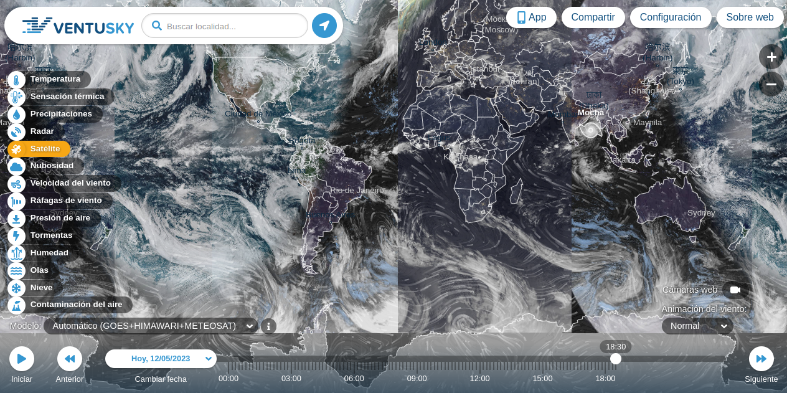 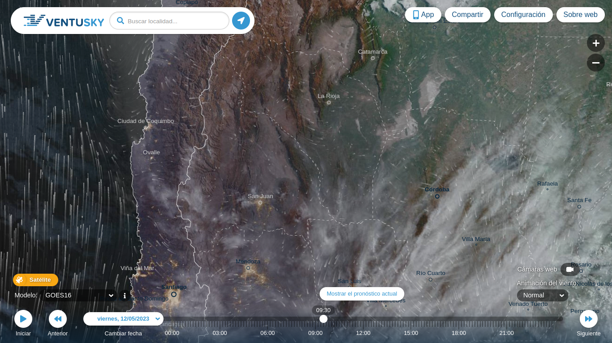 -
Open Street Map
OpenStreetMap, Es una plataforma colaborativa de mapeo digital de código abierto que se ha convertido en una herramienta esencial para la investigación en geociencias y programación. OpenStreetMap es una base de datos geográfica que permite la creación y edición de mapas por parte de cualquier persona en todo el mundo. A diferencia de los mapas comerciales, OpenStreetMap permite el acceso gratuito y la distribución de datos geográficos, lo que lo convierte en una herramienta valiosa para investigadores, empresas y organizaciones sin fines de lucro. La plataforma fue creada en 2004 y ha crecido rápidamente gracias a la colaboración de una comunidad de mapeadores voluntarios. Estos mapeadores utilizan herramientas de mapeo en línea para agregar información geográfica detallada sobre carreteras, edificios, ríos, montañas, parques, entre otros elementos en todo el mundo. Además, OpenStreetMap cuenta con una API (Interfaz de Programación de Aplicaciones) que permite a los desarrolladores de software crear aplicaciones basadas en datos geográficos, lo que amplía aún más las posibilidades de uso de la plataforma. En el campo de las geociencias, OpenStreetMap ha demostrado ser una fuente confiable de datos geográficos para la investigación en áreas como la climatología, la planificación urbana, la conservación de la biodiversidad, la gestión de desastres naturales, entre otras. Además, la plataforma ha sido utilizada en proyectos de mapeo participativo en países en desarrollo, lo que ha permitido a las comunidades locales tener un mayor control sobre la información geográfica que les afecta directamente. En el campo de la programación, OpenStreetMap es una plataforma de gran interés para los desarrolladores de aplicaciones que requieren datos geográficos precisos y actualizados. Al ser una fuente abierta y colaborativa, OpenStreetMap ofrece una alternativa a las plataformas de mapas comerciales, lo que puede ser beneficioso para empresas y organizaciones que buscan reducir costos. En resumen, OpenStreetMap es una plataforma de mapeo digital de código abierto que ha demostrado ser una herramienta valiosa para la investigación en geociencias y programación. Su enfoque colaborativo y su compromiso con la distribución gratuita de datos geográficos la convierten en una alternativa viable a las plataformas comerciales de mapas.
Visitar Open Street Map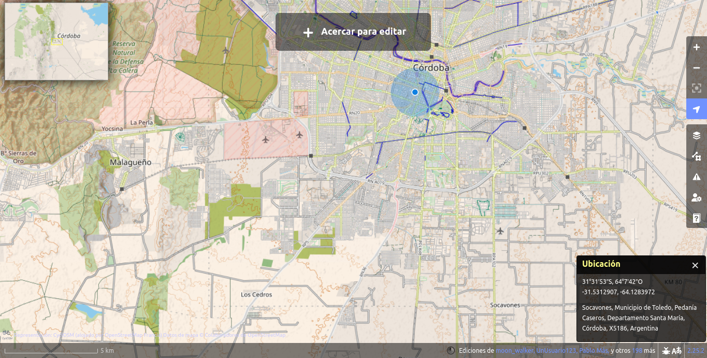 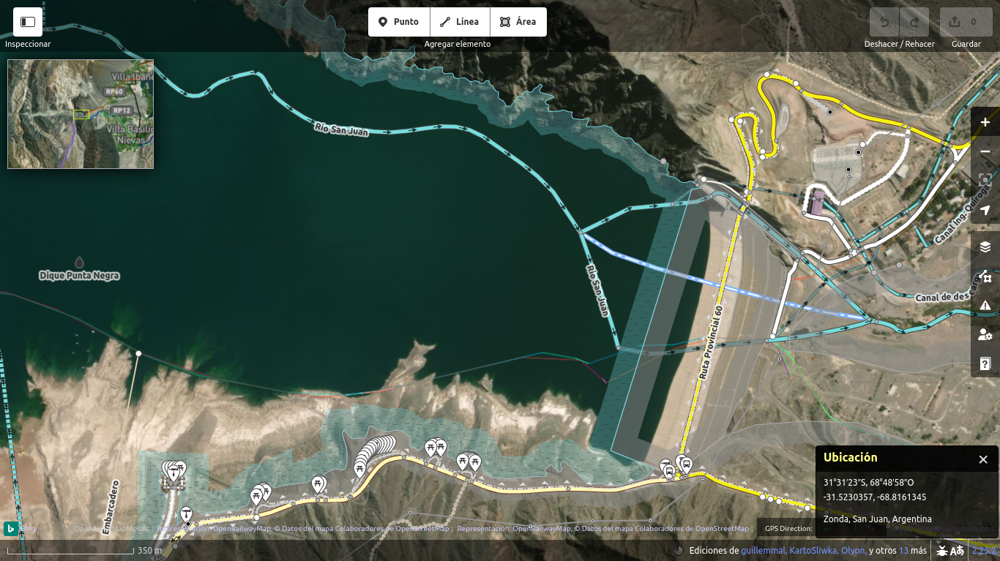 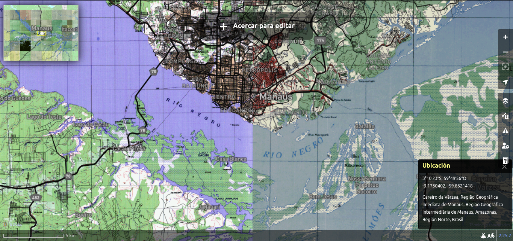 -
Gaia GPS
GaiaGPS es una plataforma de mapeo en línea que utiliza tecnología GPS para proporcionar mapas precisos y detallados en tiempo real, y está diseñada específicamente para actividades al aire libre como senderismo y camping. La plataforma permite a los usuarios acceder a mapas de alta calidad de todo el mundo, lo que les permite planificar rutas, hacer un seguimiento de su ubicación en tiempo real y compartir información de manera eficiente con otros miembros de su grupo. Además, la plataforma ofrece la posibilidad de guardar mapas sin conexión para acceder a ellos en áreas donde no hay conexión a internet. GaiaGPS también tiene aplicaciones prácticas en geología, cartografía y ciencias ambientales. Su código de programación avanzado ha sido utilizado en estudios científicos para mapear áreas inaccesibles, proporcionando información valiosa sobre la topografía y geología de nuestro planeta.
Visitar Gaia GPS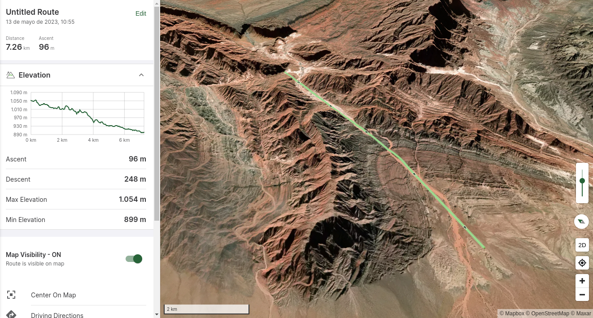 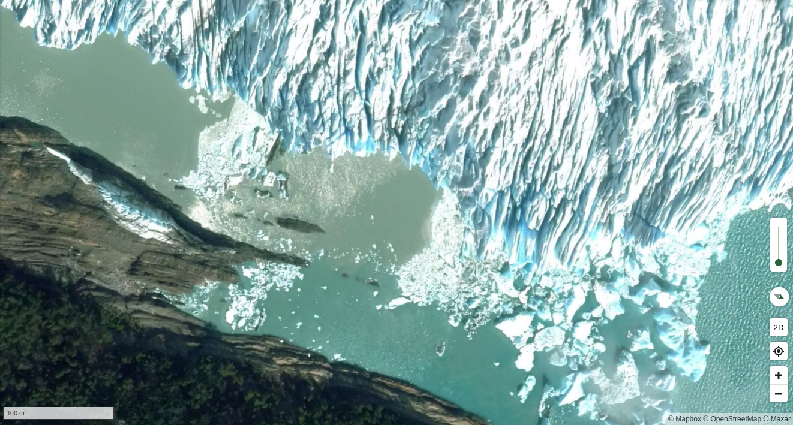 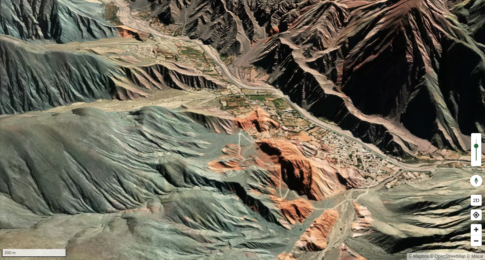 -
Asterank y Galaxies
Las aplicaciones web Asterank y Galaxies están revolucionando nuestra comprensión del universo. Asterank, permite a los usuarios explorar los datos de más de 600,000 asteroides conocidos en nuestro sistema solar, calculando su valor potencial en términos de recursos minerales y metales preciosos. Galaxies, por otro lado, proporciona una herramienta de visualización interactiva de las galaxias y cúmulos de galaxias cercanos, permitiendo a los astrónomos y científicos aficionados investigar la estructura y la dinámica de nuestro universo. Ambas aplicaciones hacen uso de técnicas avanzadas de programación y procesamiento de datos para ofrecer una experiencia de usuario fluida e interactiva. La plataforma de Asterank se basa en el lenguaje de programación JavaScript, mientras que Galaxies utiliza WebGL para renderizar visualizaciones 3D en tiempo real.
Visitar Galaxies 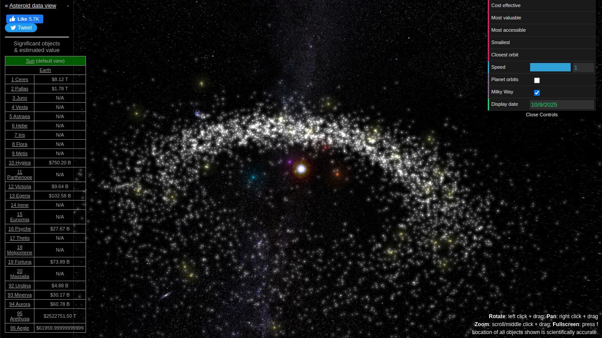
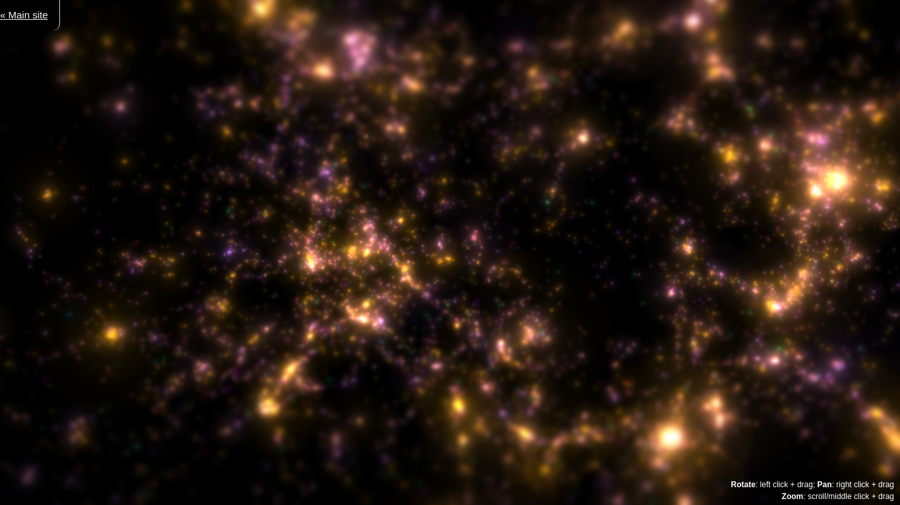
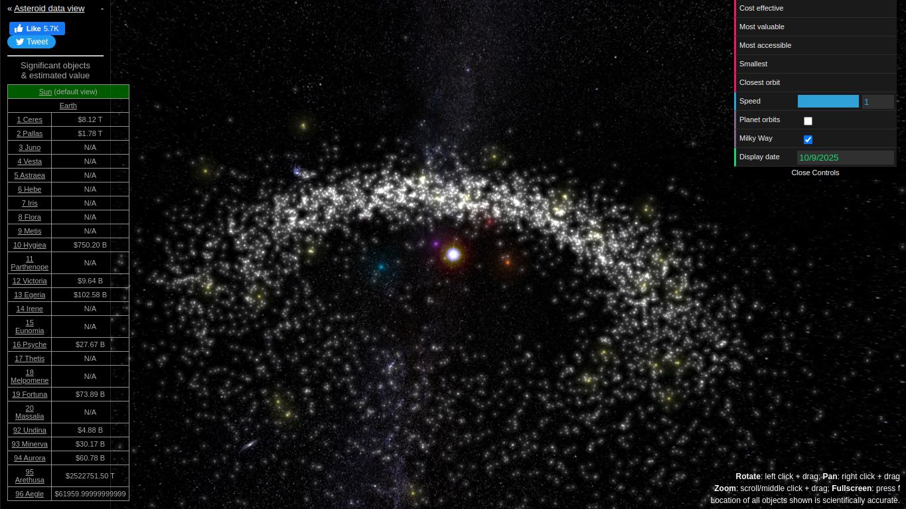
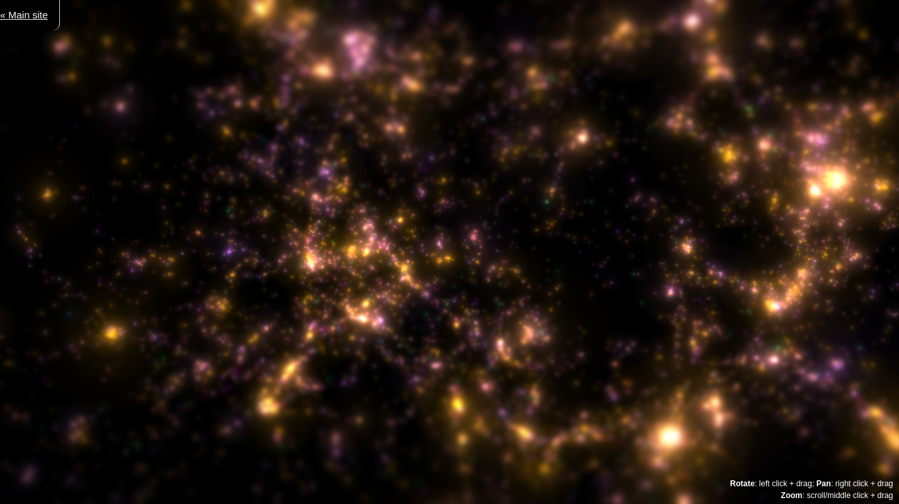
-
ThePaleobiology Database
Paleobiology Database (PaleoBioDB) es una base de datos global en línea que se utiliza para recopilar y proporcionar información sobre la biodiversidad pasada. Contiene una gran cantidad de información de alta calidad sobre fósiles, incluyendo su ubicación geográfica y temporal, su morfología y su clasificación taxonómica. La base de datos es una herramienta valiosa para los científicos y los entusiastas de la paleontología, ya que permite el acceso y la integración de datos de múltiples fuentes en un solo lugar. La Paleobiology Database es una plataforma de colaboración, y permite la contribución de datos por parte de científicos y aficionados de todo el mundo. La base de datos también cuenta con una interfaz de usuario intuitiva que permite la visualización de datos en 2D y 3D, y permite la descarga de datos para su análisis posterior. Además, la Paleobiology Database es una herramienta clave para la investigación en biología evolutiva y paleontología. Los datos contenidos en la base de datos pueden utilizarse para reconstruir la evolución de las especies a lo largo del tiempo, estudiar la distribución geográfica de los fósiles y comprender cómo la biodiversidad ha cambiado a lo largo de la historia de la vida en la Tierra.
Visitar PaleoBiologyDataBase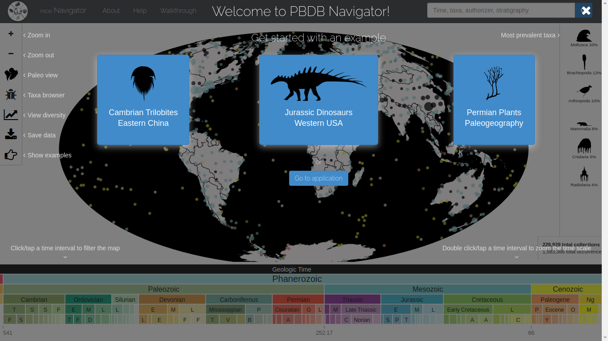 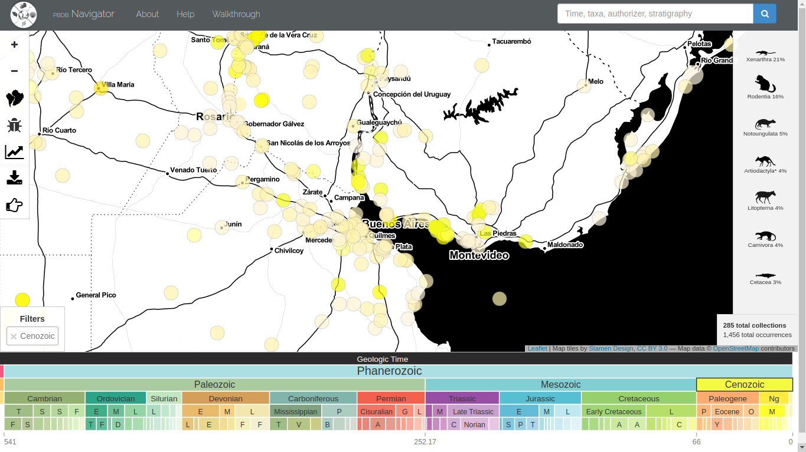 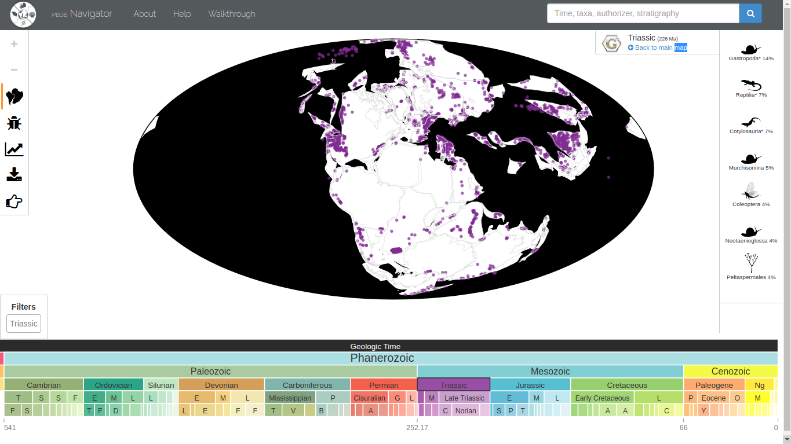